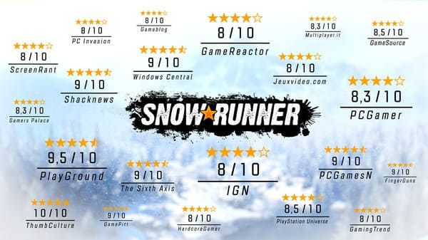

Головна
Історія
Гемплей
Оцінки та критика
Пасхалки
Оцінки та критика

Мінуси
Пустий світ(Не має трафіку)
Нема реалізації дощю з авто(не працюють двірники)
Плюси
Зроблена реалістично багнюка. Тепер вона має більше реальний рівнів складності та змушуе користуватися усіма передачами автомобіля
Додано багато ліцензійних авто, що мають оригінальний вигляд
Вдосконалена графіка
Можлиивість поліпшення вантажівки, купівля причепу
Створена економіка, зв'язок між локаціями та різноманітність вантажу